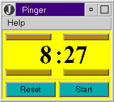

|
The NetRexx Pinger application |
This is an example of a stand-alone Java application, which has been
written in NetRexx; when running, it should
look something like this:
|  |
Pinger is a 'kitchen timer' application. Use the
unmarked spin buttons to set the minutes and seconds, then press Start
to start the timer.
The program shows the use of Frames, simple menus and Dialogs, multiple threads (for the spin buttons and the main timer function), a custom component, off-screen Image drawing (graphics), Java 1.1 mouse and event handling, and playing an audio clip from a file. |
Notes:
Here's the NetRexx source, as a plain ASCII file. Here, too is the pinger sound clip.
You can also download the Pinger package (with the .class files already compiled from the source) in zip format [pinger.zip, 23kB]. The Pinger package is also included in the NetRexx package – you may prefer to download the whole package, including the other NetRexx samples and examples.
Please note that the Pinger package is part of the NetRexx package, and is covered by the terms in the IBM License Agreement for that package.
Note that the Java runtime (e.g., from the Java Development Kit) must be installed before you can run stand-alone Java applications, and you must also have either the NetRexx runtime or compiler installed, too. See downloading the NetRexx package for more details.
If you downloaded the package above (pinger.zip), first unpack the files into a directory (see User's Guide for details of the commands to use for unpacking). Then, in that directory, run:
java Pinger
Note that you need the capital letter 'P' as shown, as the java command is case-sensitive.
To compile and run the program, create or copy the 'Pinger.nrx' file (note the first letter is a capital letter), and then enter the commands:
java COM.ibm.netrexx.process.NetRexxC Pinger java Pinger
This would:
[
IBM home page |
Search |
Contact IBM |
Help |
Terms of use |
Privacy
]